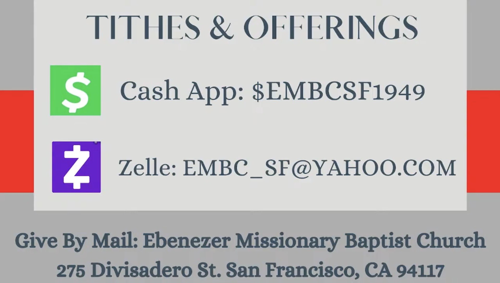

Your generosity helps us continue our mission, maintain our church home, and serve the San Francisco community. We offer several secure ways to return your tithes and offerings.
Send directly from your banking app using our official email address:
Or scan the QR code below (click to expand):
Give quickly and securely using our official Cashtag directly in the CashApp:
You can safely mail a check or money order directly to the church office: